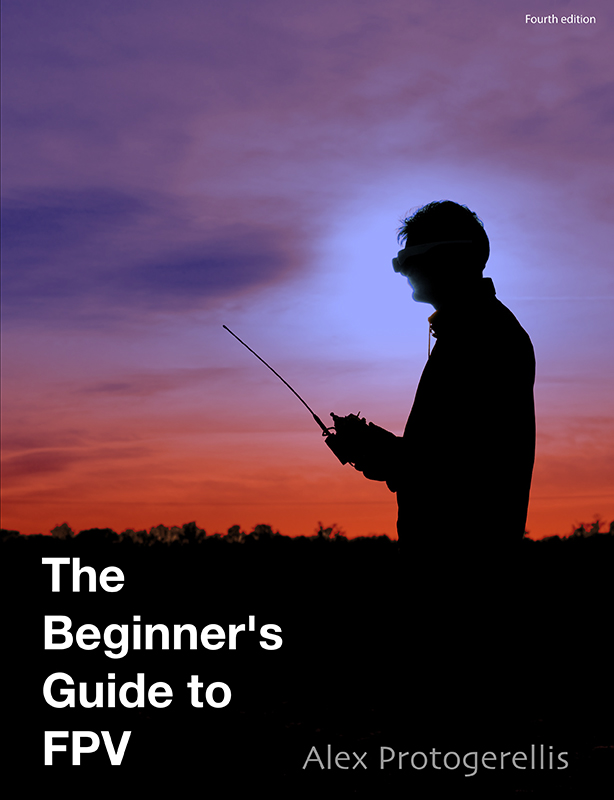

In the last few years the first person view phenomenon has taken the RC world by storm. It has brought an entirely new field to the hobby with new thrills and challenges. Despite this, FPV remains a hobby that requires a steep learning curve, significant research, a decent investment and a lot of trial and error.
This book is a beginner’s guide to FPV piloting. It intends to bring the reader from zero knowledge of the subject to a position where they can safely conduct FPV flights.
It covers the broad range of necessary topics such as vehicle selection, control link, video link, component placement, ground station design, interference troubleshooting, and tips for successful flights. It provides photographs of commonly used equipment and schematics of typical setups – including a detailed case study on the author’s own configurations.
The must-have guide for any hobbyist new to the exciting world of FPV.
Get the guide if you want:
- A single, well structured reference for all things FPV
- To avoid costly mistakes (or crashes!)
- To avoid weeks of trauling the forums
- To understand the theory
- To get actionable advice, how-tos and gotchas
Do note that the guide isn't:
- The only source you'll ever need to read on FPV. The internet will always be your friend!
- A shopping list of what to buy. New equipment is introduced daily. The guide will help you understand, assess and select
- For pilots with tens of FPV flights under the belt
- A guide on the RC hobby in general
- A single, well structured reference for all things FPV
- To avoid costly mistakes (or crashes!)
- To avoid weeks of trauling the forums
- To understand the theory
- To get actionable advice, how-tos and gotchas
- The only source you'll ever need to read on FPV. The internet will always be your friend!
- A shopping list of what to buy. New equipment is introduced daily. The guide will help you understand, assess and select
- For pilots with tens of FPV flights under the belt
- A guide on the RC hobby in general
Also available on iBooks, Nook, Amazon and more!
And a sampling of the goodies you'll find inside:
- A grounds up intro to all FPV components from VTx to OSDs and locators to auto pilots
- Answer to common questions such as "how far will it go?!" and "what frequencies to pick for control and video?"
- Common sense practical explanations of basic radio frequency theory
- Deep dives into more complex topics such as link margin and resolving interference
- Detailed descriptions of the author's own setups including full schematics, parts lists and photos
- Common gotchas and mistakes to avoid
- Guidance on how to choose your specific components (from FPV vehicle to antennas)
- A grounds up intro to all FPV components from VTx to OSDs and locators to auto pilots
- Answer to common questions such as "how far will it go?!" and "what frequencies to pick for control and video?"
- Common sense practical explanations of basic radio frequency theory
- Deep dives into more complex topics such as link margin and resolving interference
- Detailed descriptions of the author's own setups including full schematics, parts lists and photos
- Common gotchas and mistakes to avoid
- Guidance on how to choose your specific components (from FPV vehicle to antennas)